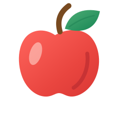

A clearer look at your produce
Know your fruit.
Choose wisely.
Check the visible appearance of supported produce. Confirm its identity for storage guidance.
FreshPick checks visible appearance only. It cannot confirm internal quality or food safety.
Scan fruit

Center one supported fruit or vegetable in the frameDrop your image here
Drag and drop a photo, or choose one from your device.
JPG, PNG, WebP or BMP · one image · up to 20 MB
Use a clear photo of one supported fruit or vegetable.
Choose Camera or Gallery to begin.
For best results: good lighting · clear focus · one item
FreshPick assessment
Taking a closer look
Checking the image with the connected model. This may take a moment.
- Image received
- Sending image to model
- Waiting for model response
Report
No result yet
Run a scan to see a result
Typical storage guidance
Confirm the identification, then tell us about storage and signs a photo cannot establish. Appearance details are suggested from the photo and can be edited.
Complete the details above to see sourced storage guidance.
Room-temperature references assume a cool indoor spot; heat can shorten the window. Refrigerated references assume a working refrigerator at or below 4°C. Time left is a reference estimate, not a safety guarantee. At its maximum, the app recommends discarding conservatively even without visible spoilage.
Run a scan to receive a cautious description of visible condition.
This assessment uses visible appearance only. It cannot confirm internal quality, contamination, or food safety. Do not rely on this result alone to decide whether food is safe to eat.
Visible-condition assessment only.
Inspector
Technical assessment details
Insights
Your latest scans, saved on this device.
Recent scans
Up to 12 scans. Identification scores describe model predictions, not produce quality.